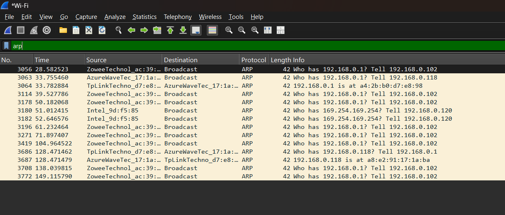

Report: Data Link Layer
Part 1: Theoretical
1.1. Ethernet Standards, Limits, and Frame
Ethernet standards define the physical and data link layer specifications for local area networks. They have evolved to support higher speeds and different media types.
- 10BASE-T (Ethernet): 10 Mbps over twisted-pair copper wire.
- 100BASE-TX (Fast Ethernet): 100 Mbps over twisted-pair copper wire, was a very common standard.
- 1000BASE-T (Gigabit Ethernet): 1 Gbps over twisted-pair copper wire, the current standard for most wired LANs.
- 10GBASE-T: 10 Gbps over twisted-pair copper wire, used in high-performance workstations and servers.
- Fiber Optic Standards: Used for longer distances and immunity to electromagnetic interference, common in network backbones.
Ethernet Limits: For Ethernet over unshielded twisted-pair cabling, the maximum segment length is typically 100 meters. This is due to signal attenuation and timing requirements for collision detection in half-duplex modes.
Ethernet Frame: The Ethernet frame is the data unit used to transport data across the network. It encapsulates a network layer packet and adds header and trailer information for addressing and error checking.

The main components are: Destination MAC, Source MAC, Type, the Payload, and a Frame Check Sequence for error detection.
1.2. MAC Address and Broadcasting
A MAC address is a 48-bit unique identifier assigned to a Network Interface Card by the manufacturer. It operates at the Data Link Layer and is often called a hardware or physical address. It is written in hexadecimal, like 00:1A:2B:3C:4D:5E.
- The first 3 bytes form the Organizationally Unique Identifier, identifying the manufacturer.
- The last 3 bytes are a unique serial number assigned by the manufacturer.
Broadcasting is the act of sending a data packet to all hosts on a local network segment. This is achieved by using a special destination MAC address: FF:FF:FF:FF:FF:FF. Any frame sent to this address is processed by every device in the broadcast domain.
1.3. The Difference Between Hub, Switch, and Router
- Hub: A hub is a simple device that regenerates and forwards any incoming electrical signal to all of its ports. All connected devices share the same bandwidth and form a single collision domain. It is an unintelligent, legacy device.
- Switch: A switch is an intelligent device that forwards data based on MAC addresses. It learns which device is connected to which port and sends frames only to the intended destination port. Each port is its own separate collision domain, dramatically improving efficiency and reducing traffic congestion.
- Router: A router is a more advanced device used to connect different networks. It makes forwarding decisions based on IP addresses. Routers create boundaries for broadcasts, meaning each interface on a router is a separate broadcast domain.
1.4. CSMA/CD, Collision, Half and Full Duplex
CSMA/CD is the protocol used in legacy half-duplex Ethernet networks to manage access to a shared physical medium.
- Carrier Sense: Listen to the network to check if it is free.
- Multiple Access: If the network is free, any device can start transmitting.
- Collision Detection: While transmitting, the device listens for other signals. If another signal is detected, a collision has occurred. The device stops, sends a jam signal, waits a random amount of time, and then retries.
A collision is the result of two or more devices attempting to transmit on a shared medium at the same time, corrupting the data.
- Half-duplex: Data can be sent or received, but not at the same time. CSMA/CD is required here. Hubs operate in half-duplex.
- Full-duplex: Data can be sent and received simultaneously. This is possible in modern switched networks, where there are dedicated send and receive paths. Collisions do not occur in full-duplex mode, so CSMA/CD is disabled.
1.5. ARP Request, Detecting Doubled IP Address
ARP is the protocol used to resolve a Layer 3 IP address into a Layer 2 MAC address. When a host needs to send a packet to another host on the same local network, it needs the destination's MAC address.
An ARP Request is a broadcast message sent to the entire LAN, containing the question: "Who has the IP address 192.168.1.10?". The host with that IP address responds with a unicast ARP Reply containing its MAC address.
Detecting Doubled IP Address: Operating systems use a special type of ARP called Gratuitous ARP to detect IP conflicts. When a device obtains a new IP address, it broadcasts an ARP request for its own IP address. If it receives an ARP reply from another device, it knows that the IP address is already in use and reports an IP address conflict.
1.6. BOOTP, DHCP
BOOTP is an older network protocol used by a client to obtain an IP address from a server. It was largely static, requiring a pre-configured table on the server mapping MAC addresses to specific IP addresses.
DHCP is the modern, more powerful successor to BOOTP. It automates the assignment of IP addresses, subnet masks, default gateways, and DNS servers. DHCP can lease IP addresses from a pool for a specific period.
The DHCP process is known as DORA:
- Discover: The client broadcasts a DHCPDISCOVER message to find DHCP servers.
- Offer: DHCP servers respond with a DHCPOFFER message, offering an IP address lease.
- Request: The client broadcasts a DHCPREQUEST message, accepting one of the offers.
- Acknowledge (ACK): The server finalizes the lease by sending a DHCPACK message with the configuration details.
1.7. VLANs
A VLAN allows a single physical network switch to be logically segmented into multiple, separate broadcast domains. Devices in one VLAN cannot communicate directly with devices in another VLAN; they require a Layer 3 device to route traffic between them.
VLANs are used to:
- Improve Security: Isolate sensitive traffic.
- Increase Performance: Reduce the size of broadcast domains, which reduces unnecessary broadcast traffic for hosts.
- Simplify Management: Group users by function rather than physical location.
Part 2: Practical
This section contains the results of the practical exercises.
2.1. Find MAC Address and Default Gateway's MAC
Using the ipconfig /all command, I identified my computer's MAC address and the IP address of the default gateway.
My MAC Address is: A8-E2-91-17-1A-BA
Then, using Wireshark, I captured the ARP traffic after clearing the ARP cache. The screenshot below shows the ARP Reply from the default gateway (192.168.0.1).
The MAC Address of the default gateway is: a4:2b:b0:d7:e8:98
2.2. Find the producer of your network adapter
Write down the result of your OUI lookup here.
2.3. Flush ARP cache
Insert screenshots showing the arp -a command before and after flushing the cache.
2.4. Set the same IP address on two different hosts
Insert a screenshot of the IP address conflict error message.
2.5. Using Wireshark save the DHCP packets
Insert a screenshot from Wireshark showing the DORA (Discover, Offer, Request, ACK) packets.
2.6. Release and renew IP address using ipconfig
Insert screenshots of the ipconfig /release and ipconfig /renew command outputs.
2.7. Change MAC address and verify IP address obtained
Insert a screenshot of the network adapter properties where you changed the MAC address and describe the results.